I criteri di congruenza dei triangoli rettangoli
Due triangoli rettangolo hanno senz'altro l'angolo retto in comune, pertanto, per stabili se sono congruenti, basta trovare altri due elementi che siano rispettivamente congruenti (e non tre come avviene per i triangoli in generale).
Teorema 3.3.5 (Primo criterio di congruenza tringoli rettangoli). Due triangoli rettangoli sono congruenti se hanno rispettivamente congruenti i due cateti. □.

Teorema 3.3.6 (Secondo criterio di congruenza tringoli rettangoli). Due triangoli rettangoli sono congruenti se hanno congruenti rispettivamente un cateto e un angolo acuto corrispondenti. □.
Teorema 3.3.6 (Terzo criterio di congruenza tringoli rettangoli). Due triangoli rettangoli sono congruenti se hanno congruenti rispettivamente l'ipotenusa e un angolo acuto. □.

Teorema 3.3.5 (Quarto criterio di congruenza tringoli rettangoli). Due triangoli rettangoli sono congruenti se hanno congruenti rispettivamente l'ipotenusa e un cateto. □.